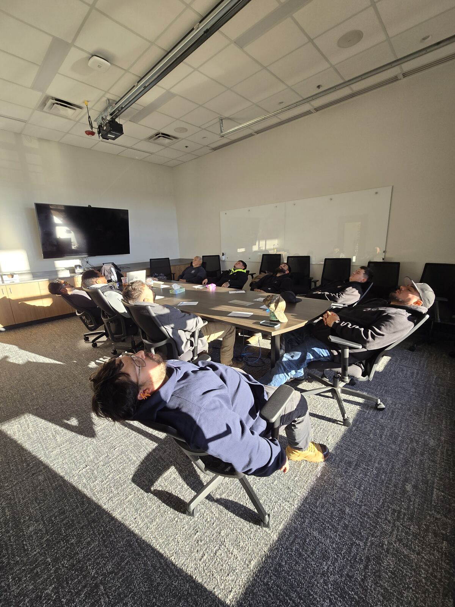

Eradicate burnout & fatigue
Presenteeism—people showing up exhausted, at a fraction of capacity—and stress-induced turnover are invisible profit drains. A shared reset interrupts that cycle before it becomes a retention or disability claim.
Front Range · On-site · Teams of 10
We convert a quiet conference room into a 25–35 minute down-regulation wave that fits a lunch window or shift rotation. Ten employees at a time. Fully clothed. Zero intake forms. Immediate return to work.
Request a Corporate ProposalThe protocol
Mobile Stress Recovery delivers the NADA 5-point ear protocol as a high-efficiency wellness block for supervisors who protect their people’s focus. Standard EAPs stall at 3% to 8% engagement because professionals fear stigma and mental-health disclosure. This format is non-verbal, campus-based, and built for teams in tech, finance, law, and marketing—where burnout is operational, not optional.
The executive pitch
Designed for department supervisors, managers, and wellness directors who prefer a direct conversation—and a benefit their teams will actually use, without the stigma of a counseling intake.
Presenteeism—people showing up exhausted, at a fraction of capacity—and stress-induced turnover are invisible profit drains. A shared reset interrupts that cycle before it becomes a retention or disability claim.
Cognitive exhaustion and decision fatigue slow judgment and raise operational error rates. A 5-point auricular reset lowers systemic cortisol so people return with sharper focus, short-term memory, and a clear desk-side mind.
Corporate chair massage treats three to four people per hour. This group framework resets ten employees simultaneously in a 25–35 minute lunch window or shift rotation—then they go straight back to work.
Completely non-verbal. Zero personal forms, data tracking, or diagnostic paperwork. No changing rooms or specialized tables. We bring sterile supplies; you provide a quiet conference room.
ROI & impact
Preventative, workplace-integrated stress reduction is an operational pressure-release valve—measured against EAP engagement and healthcare utilization, not attendance at an off-site seminar.
$6:1
Studies document up to a $6 return for every $1 invested in preventative, on-site stress reduction.
20–35%
A conservative 20% to 35% workforce participation rate—about 3× typical EAP utilization.
3–8%
Traditional assistance programs stall here because professionals fear stigma, data tracking, and diagnostic paperwork.
10
Strict 10-person capacity protects clinical safety and premium delivery—never a packed wellness fair.
Off-site barriers
Counseling intakes, professional bias, and diagnostic paperwork keep exhausted high-performers from using the benefit they already pay for.
On-site framework
Employees sit, receive a 5-point auricular reset, and rest 25 to 35 minutes. Cortisol drops mechanically. No disclosure required.
Operational yield
Mid-day fatigue and decision dumps recede. Stress is mitigated before it becomes sick leave, turnover, or a disability claim.

What to expect
Chronological, turn-key, and built around your existing meeting space along the Front Range.
We arrive with sterile supplies and ambient soundscapes. Your team provides the room. Sign-ups stay internal; logistics stay with us.
Rapid, non-invasive placement of five specific stress-relief auricular points using tiny sterile needles—or premium ear seeds for needle-sensitive staff. No undressing. No disclosure.
A deeply restful 25–35 minute group relaxation wave that fits a lunch window or shift rotation. Employees sit fully clothed, then return immediately alert.

Corporate offerings
Flat-rate B2B structures for supervisors who need predictable wellness spend—not a stack of individual appointments.
Event
One fixed event block for up to 10 participants. Ideal as a pilot for a high-burnout pod or a women-led division testing the format.
Half-day
Back-to-back group waves to clear burnout across larger departments without pulling everyone off the floor at once.
Retainer
A monthly, predictable wellness line for recurring Wellness Wednesday blocks—calendar locked, talent-magnet benefit in place.
Flat billing applies per wave block (Empty Chair Policy). Strict 10-person maximum capacity per wave to maintain premium standards and clinical safety protocols.
The practice
Founded in Broomfield by Lea Ann Rowley, a certified acupuncturist and stress recovery specialist. The practice exists to offer non-pharmaceutical, preventative corporate maintenance—so teams can recover without leaving campus or leaning on another prescription.
Client feedback
First-hand notes from departments that already run Mobile Stress Recovery on campus—not anonymous marketplace reviews.
“Tuesday my body was literally vibrating with stress. I signed up on the wait list and thankfully I got in. My body got a reset and even though the stressors are not gone, I can handle them once again.”
“I’ve experienced life-changing improvements in sleep, anxiety & clarity.”
“A quick & convenient way to shut down ruminating thoughts.”
“I’m more relaxed & less agitated. My family notices a difference in my mood.”
“Feedback from our employees has been overwhelmingly positive. Her skill, reliability, and compassionate approach make her an exceptional wellness partner.”
“On-site services have allowed our staff to explore alternative wellness options many had never considered. Easy access has encouraged participation and broadened mindsets around holistic care in a high-stress profession.”
Intake
Protect your top performers, safeguard team morale, and stop losing money to workplace exhaustion. Arrange a brief introductory call to discuss a pilot session for your leadership team.